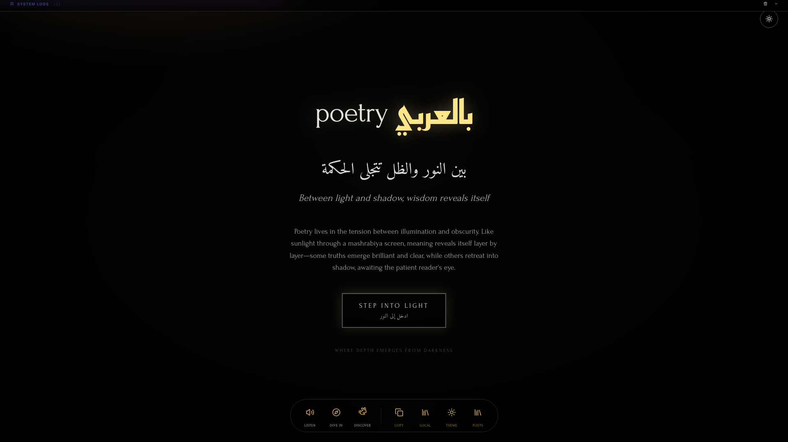

Initial Light Animation

Mid-Cycle Animation
Button Hover State

Three visual alternatives to fix shadow quality, depth effects, and performance issues

Keep dramatic lighting concept, simplify execution. Same direction as current design but properly executed.
--light-x, --light-angle) drive all dynamic elements
Completely different direction: subtle stratification instead of dramatic contrast. Inspired by Japanese shoji screens + morning fog.

Radically different: ONE perfect light ray through architectural opening. Inspired by Pantheon oculus + Gothic cathedral windows.
--brightness)| Feature | Current | Option 1 | Option 2 | Option 3 |
|---|---|---|---|---|
| Shadow Quality | ❌ Muddy | ✅ Clean | ✅ Stratified | ✅ Pure Black |
| Light Rays | 5 rays + pools | 3 hero rays | No rays (glow) | 1 perfect ray |
| Pattern Overlay | Static SVG | Dynamic CSS | None | None |
| Animation Cycle | 8 seconds | 8 seconds | 12 seconds | 8 seconds |
| DOM Elements | ~20 elements | ~8 elements | ~6 elements | ~3 elements |
| Performance (FPS) | ⚠️ 45-50fps | ✅ 60fps | ✅ 60fps | ✅ 60fps |
| Design Coherence | ❌ Disconnected | ✅ Unified | ✅ Unified | ✅ Unified |
| Aesthetic | Busy | Dramatic | Contemplative | Stark |
| Implementation Complexity | High | Medium | Low | Very Low |
Best Overall: Option 1 (Improved Chiaroscuro) - Keeps the dramatic vision but fixes all technical issues. Proper shadow quality, dynamic lattice, coherent lighting. Same philosophy, better execution.
Best for Performance: Option 3 (Minimal Ray Tracing) - Ultra-simple DOM (3 elements), maximum FPS, works perfectly on low-end mobile devices. Most elegant code.
Best for Meditation/Poetry Context: Option 2 (Soft Depth Layers) - Contemplative aesthetic, slower breathing animation, gentle emergence from shadow. Most poetic interpretation of "light and shadow."
Most Dramatic Impact: Option 3 (Minimal Ray Tracing) - High contrast, single perfect beam, content literally emerges from complete darkness. Most cinematic.
Hover and interact with each option below (live animations):